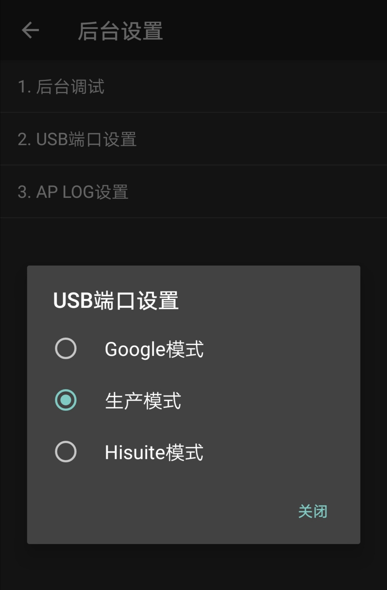
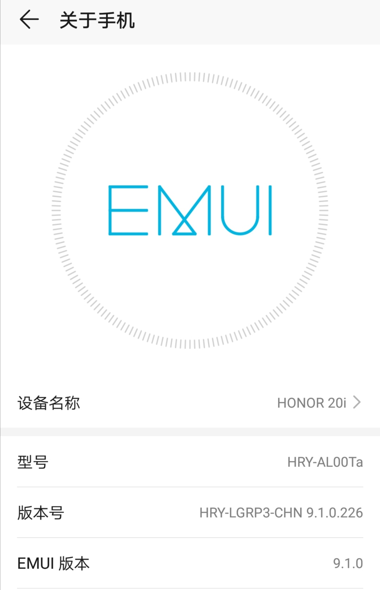

麒麟710解锁及Root
分类 华为
标签 刷机 BL解锁 华为
说明:
刷机有风险，在进行操作前请先备份数据，若设备损坏或数据丢失，本人概不负责
使用本教程需要有一定的刷机基础!
1. 准备
- 一台电脑(最好为Win10或Win11)
- 一根数据线
- 一台CPU为麒麟710的华为设备
- 下载解压好所需文件(见文末)
- 一个善于思考的大脑
请先到设置，将查找设备关闭，并推出华为账号，开启USB调试
#### 1.1 安装驱动打开压缩包解压出来的驱动文件夹
找到如图所示的5个可执行程序
把他们全部都运行安装(adb驱动任选其一)
然后重启电脑
2.进5%模式
开机状态下，按住音量+ 音量- 电源键，手机关机后，不要松开音量键，松开电源键
过一会应该会卡在一个界面，如果正常开机请参考第3步
3. 开生产
*若第2步成功，可不执行此步骤
拨号界面输入*#*#2846579#*#*
进入工程菜单，选择 1.后台设置 -> 2.USB端口设置 -> ◯ 生产模式

设备管理器出现以下三个端口即可 (因为这里没有重启，若出现感叹号则是不正常的)
4. 降级
*若系统版本<= EMUI 9.1 可跳过此步骤
若为鸿蒙系统此步骤请到了第7步写入临时引导后，再来执行本步骤，同时将工具的端口切换为 fastboot
解锁需要将设备的版本降至EMUI9.1及以下：

下载降级包，可进入 万维论坛（收费10元） 下载，版本需<=EMUI 9.1
例如：我这里要选择第一个下载

解压降级包以及里面的所有压缩包
打开猎人线刷降级工具，点击右下角的...，浏览你的降级包解压出来的 \dload\update_sd_base目录，应该有以下类似的文件：
选择UPDATE.APP(就是最大的那个)
右键单击Block(Map) -> 全不选(X)
然后手动选择以下的项目：
注：若没有CURVER和VERLIST，请选择BASE_VER和BASE_VERLIST
最后点击 开始
出现写入完成，是否重启手机，请单击是，然后按住手机的音量+ 音量-，直到重新出现刚才的升级界面。
5.免拆进1.0
若为鸿蒙系统此步骤不可用
这里需要先进Q群864914382
打开文件里的StartFlashTool,选择菜单->注册新用户
填写信息后点击注册，然后到群里联系 @沙漠之狐 发送你的用户名来加时间
返回登录，然后选择软件测试点开
然后选择你机型开头的3个字母
例如：荣耀20i 型号 HRY-AL00Ta ,则选择HRY选项
过一会，手机自动重启，进入黑屏界面，设备管理器出现HUAWEI USB COM 1.0设备，若出现USB SER则代表驱动没装好。
6.拆机进1.0
*若第5步成功请跳过此步骤
注意：此步骤需要一定的动手能力和一双没有瞎的眼睛
首先将手机关机，拔下数据线，找到你手机的短接图，例如荣耀20i的：
拆机，将测试点连接至金属屏蔽罩，然后插上数据线，此时设备管理器应该出现HUAWEI USB COM 1.0设备，若手机亮屏，请关机后重试。
7.解锁
回到StartFlashTool,选择右侧的写入临时引导
当完成后，手机自动重启至工程fastboot模式，此时屏幕会亮起，设备管理器出现设备：
注意： 若为鸿蒙系统未降级的，请执行第4步，然后再执行下面的步骤
然后打开StartFlashToolv2.6\data，在路径栏输入cmd,回车。
在出现的窗口中，输入
1 | fastboot erase dts |
应该会显示类似的：
1 | erasing 'dts'... |
7.1 使用软件免拆进入的1.0
长按电源键，直到手机黑屏。
设备管理器重新出现HUAWEI USB COM 1.0
7.2 短接进入的1.0
扣掉电池连接器，过一会扣回去
重新执行第6步
然后回到StartFlashTool
点击右边的710_v1.1

7.3 短接进入的1.0
拔掉数据线
然后再扣掉电池连接器，然后扣回去
重新执行第6步
7.4 使用软件免拆进入的1.0
长按电源键，重置1.0端口。
然后点击右侧的710_v1.2
过一会手机会重启，进入fastboot模式
在刚才的cmd窗口，输入
1 | fastboot oem unlock |
如果是拆机短接的，成功后手机会自动重启并低级格式化
请在格式化完成后重新执行第7.3步
回到StartFlashTool,选择右侧的写入临时引导
当完成后，手机自动重启至工程fastboot模式，此时屏幕会亮起，设备管理器出现设备：
8.刷包
然后打开AndroidUtility
选择Huawei->Flasher
然后选择 Load Firmware Package
在弹出的文件选择器中选择你降级包解压出来的 dload 文件夹
注意：请确认你的刷机包是对应你手机型号的（我这里因为搜的时候少打一个字母导致不成功）如果不正确，请下载正确降级包后重新执行本教程
dload 文件夹的目录结构应该为：
1 | dload |
加载好后如图所示，然后点击 ◯ Firmware Update(FB)

然后请耐心等待进度条跑完，此时手机应该自动重启
然后显示 ! Your device has been unlocked 等黄色字样，等待若干秒后自动开机，也可按 电源键 立即开机
最后进 rec 清一遍 userdata 就好了
9. Root
*此步骤不是必要的，不过单单解锁了也没啥用处
开机，进系统 ， 打开开发者模式 -> USB调试
连上数据线，如果有提示就单击 允许
1.( EMUI 9.1/9.0 ) 回到 StartFlashTool，单击上方的 root选项

之后点击 开始ROOT
然后静静等待就好了，手机会重启几次然后进系统
2.( EMUI 8\10 ) 使用文件里的MagskPatcher
打开，登录你刚才的注册的账号

这个我没用过，大概就是提取降级包的 ramdisk 文件，修补后刷入手机
请自行摸索
相关文件
请将压缩包内的压缩包全部解压
文件名： tools.7z
SHA256： 7bef82799a865702eb1c2fd16133a8075c62ecf316b54f0bd39bd35f695a8c70
| 序号 | 链接 | 提取码 |
|---|---|---|
| 1 | 123盘 | 1451 |
| 2 | 城通网盘 | 1451 |
| 3 | 百度网盘 | ss2a |